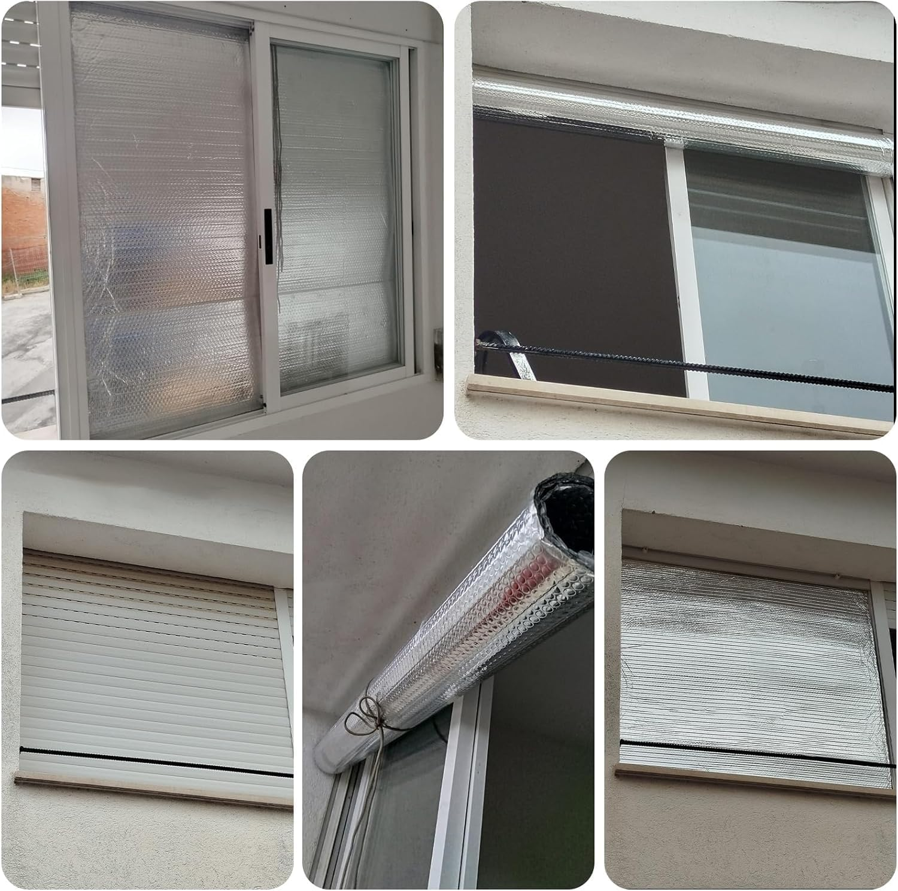

Prevención equitativa
Soluciones adaptables a todo presupuesto
Medidas concretas contra contaminación intradomiciliaria y aerosoles, según recursos e infraestructura. Protocolo 3×3: 3 minutos, 3 momentos, 3 síntomas de alerta.
Mapa de cobertura: CESFAM, operativos y densidad de necesidad
Base cartográfica institucional. El calor indica prioridad de acceso rural o demanda de vacunación. Desliza el puntero sobre las zonas críticas.
- Operativo móvil / tráfico bajo
- CESFAM / tráfico medio
- Hub urbano / calor máximo
Módulo A · $0 a muy bajo
Bajos recursos y zonas rurales
Microventilación
Abrir rendija de 5 cm en dos ventanas opuestas, 3 min cada hora. Renueva el aire sin enfriar muros ni suelo.
Humedad y humo
No secar ropa sobre estufas. La humedad mayor al 60% facilita la adhesión del virus en superficies cerradas.

Cloro diluido
10 mL de cloro comercial por 1 L de agua fría (usar en 24 h). Inactiva la envoltura de Influenza en manillas y mesas en <1 minuto. Nunca mezclar con amoniaco.
Lavado de manos
Agua y jabón 20 segundos. El jabón destruye la envoltura lipídica del virus.

Módulo B · inversión moderada
Institucional, colegios y empresas
Deflectores de metacrilato
$15.000–$35.000 CLP por ventana. Apertura pasiva de 10 cm todo el día sin corriente a nivel de usuario.
Semáforo de CO₂
Sensor NDIR $25.000–$60.000 CLP. Verde <700 ppm; amarillo 700–999 (ventilar 3 min); rojo >1000 (abrir por completo).
Calefacción limpia
Reemplazo de combustión abierta por tiro forzado, inverter o A/A de alta eficiencia.
Higiene de accesos
Alcohol gel 70% y dispensadores automáticos ($20.000–$40.000 CLP). Desinfección con amonio cuaternario entre turnos.
Matriz comparativa de impacto
| Parámetro | Rural / bajos recursos | Institucional |
|---|---|---|
| Costo inicial | $0–$2.000 CLP | $40.000–$120.000 CLP |
| Implementación | < 10 minutos | 1 a 3 días hábiles |
| Reducción estimada de carga viral | Hasta 60% con 3×3 | Hasta 85% con CO₂ constante |
| Mantenimiento | Paños y cloro diario | Baterías/USB y recarga de gel |
| Monitoreo | Vaho en vidrios = ventilar | Alarma a 700 ppm |
Calculadora presupuestaria de insumos
Protocolo 3×3 contra la Influenza
- 3 minutos: microventilación cruzada cada hora.
- 3 momentos: lavado al llegar, antes de comer y después de toser.
- 3 alertas: fiebre >38,5 °C, dificultad para respirar, decaimiento extremo → SAPU/CESFAM.
MINSAL · MINVU · Mineduc · OPS/OMS · SOCHINF